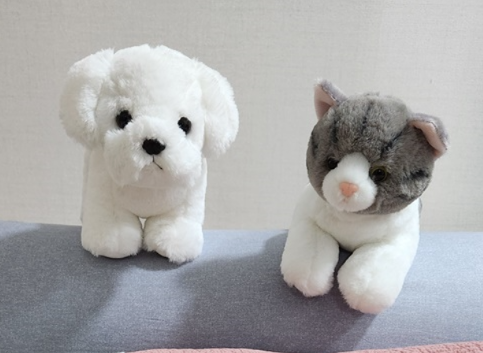
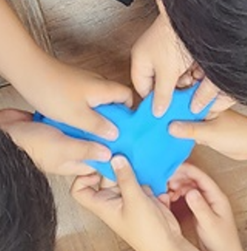

초등5학년 여학생은 지적장애학생의 충동적인 말과 행동에 산만해진 분위기, 예민해진 말다툼으로 스트레스가 증가함. 선생님은 배려하고 사이좋게 지내야한다고 하지만 자기중심적으로 말한다고 지적하면 마음도 몰라준다고 울고불고 분위기가 엉망으로 되어 감. 이에 학생들의 정서적, 심리적 특징에 알맞은 소통의 기술을 통한 또래관계 개선을 알아보고자 한다.

1. 특징 및 원인
1) 증가된 감정적 민감성
학생들은 교실 내에서 발생하는 예측할 수 없는 행동에 민감하게 반응할 수 있다. 이는 자주 발생하는 충동적 행동이 안정감을 해치고, 다른 학생들이 불안감이나 짜증을 느끼게 할 수 있다.
2) 집중력 저하
지적 장애를 가진 학생의 충동적인 말과 행동은 다른 학생들의 주의를 산만하게 하여 학습에 필요한 집중력을 저하시킬 수 있다. 이로 인해 수업 내용의 이해도가 떨어지고 학업 성취도가 감소할 수 있다.
3) 사회적 상호작용의 어려움
일상적인 교실 활동 중에 자주 발생하는 충동적인 행동은 다른 학생들과의 사회적 상호작용을 방해한다. 이는 일부 학생들이 충동적인 행동을 보이는 학생과 거리를 두려 하거나, 그 학생을 피하는 행동을 유발할 수 있다.
4) 갈등 및 다툼의 증가
충동적인 말과 행동은 종종 오해와 갈등을 야기하며, 이는 학생들 사이의 다툼으로 이어질 수 있다. 교실 내에서의 다툼은 학생들 사이의 관계를 악화시키고, 전반적인 교실 분위기를 불안정하게 만든다.
5) 스트레스 및 불안 증가
교실 내 불안정한 분위기는 학생들에게 지속적인 스트레스와 불안을 유발할 수 있다. 이는 학생들의 일상 생활과 학교 생활에 부정적인 영향을 미칠 수 있다.

2. 소통의 기술을 통한 또래관계 개선 방법
1) 신뢰 구축과 팀 빌딩
학생들은 서로에 대해 배우고 신뢰를 쌓는 단계에서 불안과 긴장을 느낄 수 있다. 학생들이 서로의 배경과 특성을 공유함으로써 개인적인 경계를 낮추고 친밀감을 증진하는 데 중점을 둔다. 팀 빌딩 활동을 통해 학생들은 협력하는 과정에서 상호 의존성과 연대감을 경험하는 활동에서 사회적 기술을 개발하고, 서로에 대한 인식을 넓히는 데 도움을 준다.
2) 경청의 기술
서는 학생들이 다른 사람의 말에 집중하고 이해하는 능력을 개발한다. 경청은 효과적인 의사소통의 핵심 요소로, 학생들이 서로의 의견을 존중하고 받아들임으로써 교실 내 긍정적인 분위기를 조성하는 데 기여한다. 또한, 경청을 통해 학생들은 타인의 감정과 생각을 더 깊이 이해하고, 충동적 반응보다는 의도적인 반응을 선택하는 법을 배운다.
3) 감정 표현의 기술
학생들이 자신의 감정을 적절하고 건강한 방식으로 표현하는 방법을 배우도록 한다. 이 과정은 자기 자신의 감정을 인식하고, 이를 안전하게 표현할 수 있는 능력을 향상시키는 데 중요하다. 감정 표현 기술을 배우는 것은 학생들이 내면의 불안과 스트레스를 관리하고, 사회적 상황에서 보다 적절하게 반응할 수 있도록 돕는다.
4) 갈등 해결 기술
학생들에게 갈등 상황을 평화롭게 해결하는 전략을 제공한다. 갈등 해결 기술을 습득함으로써 학생들은 또래들과의 의견 차이를 건설적으로 다루는 방법을 배우게 되며, 이는 교실 내외에서의 긴장을 줄이고, 관계를 개선하는 데 기여한다. 학생들은 자신과 타인의 입장을 고려하여 합의점을 찾는 방법을 배우며, 이는 사회적 상호작용에서의 성숙도를 높여준다.
5) 공감 능력 향상
공감 능력은 학생들이 서로의 감정과 경험을 이해하고, 이에 기반한 반응을 보이는 능력을 말한다. 이 학생들은 타인의 감정에 공감하는 연습을 하면서, 개인적인 연결감을 향상시키고, 또래 그룹 내에서의 지지와 소속감을 느끼는 방법을 배우도록 한다. 공감은 사회적 관계를 강화하고, 충돌의 감소에 기여할 것이다.
6) 효과적인 의사소통
학생들이 자신의 생각과 필요를 명확하게 전달하는 방법을 배우도록 한다. 효과적인 의사소통 기술은 학생들이 또래들과의 상호작용에서 자신감을 갖고 자신의 의견을 표현하게 도와주며, 학습 환경과 또래 관계 모두에서 긍정적인 결과를 가져온다. 학생들은 서로의 관점을 이해하고 존중하는 법을 배우면서, 보다 생산적인 대화를 할 수 있게 된다.
7) 자기 인식 및 자기 조절
학생들이 자신의 행동과 반응을 자각하고 조절하는 능력을 개발해야 한다. 자기 인식은 학생들이 자신의 강점과 약점을 이해하고, 이를 기반으로 자기 개선을 도모할 수 있도록 돕는다. 자기 조절 기술은 학생들이 충동적인 반응을 피하고, 고의적이며 사려 깊은 결정을 내리는 데 중요하다.
3. 결 론
학생들은 서로의 성장을 지원하는 데 필요한 도구와 지식을 습득하도록 도와야 한다. '소통의 기술을 통한 또래관계 개선' 은 교실 내의 긍정적인 상호작용과 개인적 성장을 촉진하며, 학생들의 학업 성취와 사회적 기능을 향상시키는 데 기여할 수 있다. 학생들은 자신들의 변화와 성장을 돌아보고, 앞으로의 목표를 설정 과정은 학생들이 학교 생활과 일상에서 배운 기술을 지속적으로 적용할 수 있도록 동기를 부여한다. 학생들은 더 나은 사회적 상호작용을 경험하고, 전반적인 학습 환경을 개선하는 방법을 배우게 될 것이다. 학생들은 서로를 더욱 깊이 이해하게 되고, 이로 인해 학교 생활에서의 갈등이 감소한다. 따라서 학생들은 또래들과의 관계를 개선하고, 충동적이고 도전적인 행동을 관리하는 방법을 배우게 되며, 궁극적으로는 자신과 타인에 대한 긍정적인 태도를 형성할 수 있게 될 것이다.
2024.10.26 - [특수장애] - 경계선 및 발달 지연 아동 선별 및 교육 방법
경계선 및 발달 지연 아동 선별 및 교육 방법
1. 경계선 및 발달지연 선별 방법 경계선 및 발달지연 아동을 선별하기 위해서는 다각적인 평가가 필요하다. 1) 중요한 요소는 학업 성취 평가이다-표준화된 학력 평가 도구(WISC, K-ABC 등)를 활
think-sis.co.kr
2024.02.07 - [상담] - 행동주의 상담기법 - 아동의 정서와 행동 조율
행동주의 상담기법 - 아동의 정서와 행동 조율
행동주의 상담은 내담자를 둘러싼 인간의 사고, 정서, 행동의 자극과 반응 간의 연결을 통한 조건형성에 관심을 갖는다. 이러한 조건형성 과정에서 잘못 형성된 습관이 환경의 규범이나 가치와
think-sis.co.kr